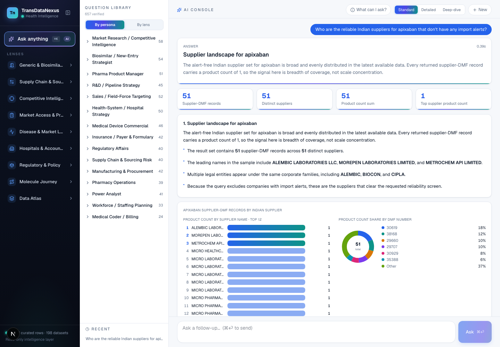
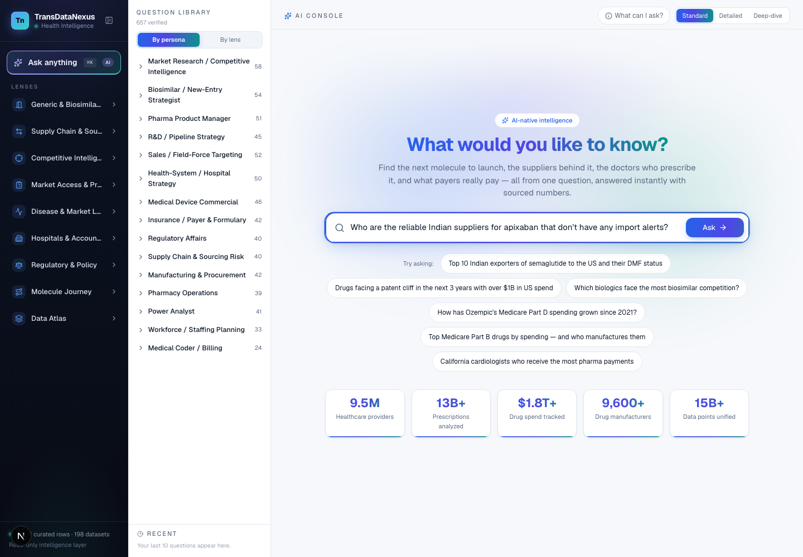

Product 03 · NLQ
The Ask console turns a plain question into a verified answer. It finds the right tables, writes and checks the SQL, runs it read-only against the same spine the lenses use, and confirms every figure against the rows that came back before you see it.
A real question, on the live system
This is the question below, exactly as it was asked, and the answer the console returned. The stages in between are the checks that ran before the number was shown.
51 supplier-DMF records across 51 distinct suppliers. The alert-free Indian supplier set for apixaban is broad and evenly distributed: every returned supplier carries a product count of one, so the signal is breadth of coverage, not concentration. Leading names include Alembic, Morepen and Metrochem, with several legal entities under the same corporate families.
sources · drug master file register · import alert list · vintage shown in the console

The same answer in the console. Headline figures, a written summary, the entities named, and charts drawn from the returned rows. Expand “Data & SQL” under any answer to see the query and the rows.
How an answer is built
The language model drafts; the system checks. Nothing reaches you that has not passed every stage below.
The question is matched against vector indexes of drugs, drug classes, manufacturers, hospitals, pharmacies and care sites, and against schema cards that describe each table. Only the cards the question needs are loaded, not the whole schema.
A compound question is broken into ordered steps. When one step depends on another, the cohort from the first is piped into the second, so “of those, which…” means exactly those.
The query is written against a curated schema with the cross-cutting rules always on: one molecule key, maximum across overlapping registers, never a sum across grains.
The SQL is parsed, restricted to SELECT, and every column is checked against the live catalogue. A query that fails is repaired once, then refused.
Read-only, with a timeout and a memory cap on every statement. The service never writes to the warehouse.
A scope guard refuses a number whose SQL dropped a filter the question asked for. A provenance guard checks that every figure in the written answer appears in the returned rows. Only then is the answer shown, with its sources.
The pipeline
Retrieval grounds the question in real entities and real tables before any SQL is written. Verification checks the answer against the rows after it is run. The model sits between two gates it does not control.
When it will not answer
Three situations stop an answer on purpose. In each, you get a card that says what is missing and offers a one-click fix, instead of a figure that looks right and is not.
The question assumes something the data does not hold, such as a brand that has no generic yet. The console asks which of the things it did find you meant.
The SQL lost a filter the question required, a state, a year, a payer. The scope guard refuses the number rather than serve a wider one.
The written answer mentions a number that is not in the returned rows. The provenance guard removes it before the answer is shown.

The console. A library of 657 verified questions grouped by persona and by lens, a question box, and the lenses one click away.
Every lens has an “ask about this” link that opens the console with the question pre-filled, so a number on screen can be interrogated without leaving it. Every answer has a “Data & SQL” panel, so a number in the console can be traced to its rows.
Send one question you would want answered. We will run it on the live console and show you the answer, the query and the rows.